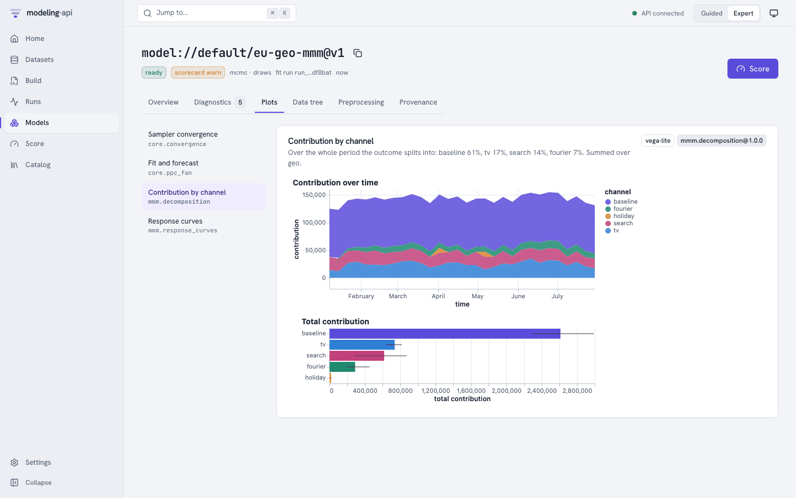
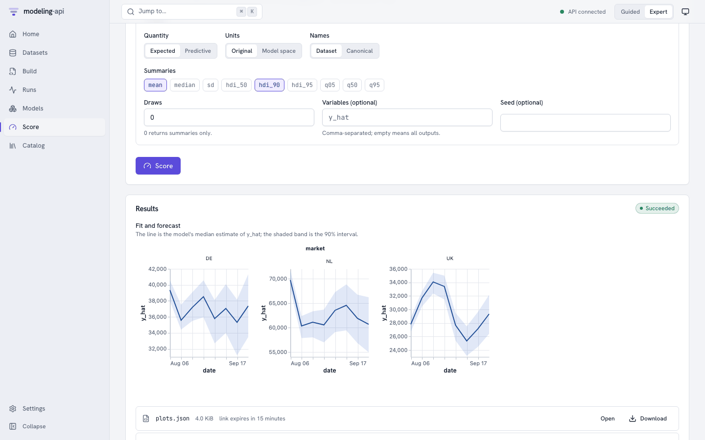

Quickstart: zero to first model in 10 minutes v0.2¶
You will start the platform on your own machine, load a demo dataset, fit a hierarchical geo marketing-mix model from the web app, read its scorecard and plots, and score an 8-week forecast. No Docker and no cloud account are needed: PostgreSQL is embedded and object storage is a local emulator of Google Cloud Storage.
| Step | What happens | Time on a laptop |
|---|---|---|
| 1. Install | Python and JavaScript dependencies | 2–5 min the first time |
| 2. Start the stack | Database, object store, API, worker, web app, plot sandbox | about 10 s |
| 3. Load the demo | Three datasets and a model spec, through the API | about 40 s |
| 4. Fit from the browser | A sandboxed fit run, followed live | 20–60 s |
| 5. Inspect | Scorecard, diagnostics, plots, provenance | – |
| 6. Score | An 8-week forecast with the fitted preprocessing replayed | about 10 s |
We ran exactly these steps on a fresh clone while writing this page: from make dev to a
scored forecast took under three minutes. The screenshots below come from that run.
Before you start¶
- macOS or Linux, about 2 GB of free disk space;
- uv (it installs Python 3.12 for you if needed);
- Node.js 22 or newer with pnpm (
corepack enableprovides the pinned pnpm version); git, andjqandcurlif you want to follow the HTTP examples later.
1. Install¶
git clone <repository-url> modeling-api
cd modeling-api
make install # uv sync --all-packages, then pnpm install
make install puts every Python package of the workspace into .venv and the web app's
dependencies into node_modules. Nothing is installed globally.
2. Start the stack¶
make dev runs every service in the foreground, each output line prefixed with its name,
and prints all 6 services up when it is ready. Leave it running; Ctrl+C stops
everything. The first start also queues a sandboxed describe run that exports the catalog
of installed models and steps; it finishes in a few seconds.
| Service | Address |
|---|---|
| Web app | http://127.0.0.1:5173 |
| API | http://127.0.0.1:8000 (OpenAPI document at /openapi.json) |
| Plot sandbox (a separate origin, on purpose) | http://127.0.0.1:5174 |
| GCS shim (signed URLs point here) | http://127.0.0.1:4443 |
Port 8000 (or any other) already taken?
Export the matching variable before make dev, and in every other shell you use:
export MAPI_API_URL=http://127.0.0.1:18000
export MAPI_GCS_ENDPOINT=http://127.0.0.1:14443
export MAPI_WEB_ORIGIN=http://127.0.0.1:15173
export MAPI_PLOTS_ORIGIN=http://127.0.0.1:15174
make dev, make seed, the CLI, the Python client and the web app all read the same
variables. This page was produced on exactly these ports.
Troubleshooting has more.
3. Load the demo¶
In a second shell:
API http://127.0.0.1:8000 is ok (version 0.5.0)
uploading eu_media_daily (17 KiB) ...
dataset://default/eu_media_daily@v1 ready
uploading fx_daily (17 KiB) ...
dataset://default/fx_daily@v1 ready
uploading holidays_eu (7 KiB) ...
dataset://default/holidays_eu@v1 ready
spec spec://default/eu-geo-mmm@r1: valid
make seed talks to the public API only. For each table it asks for a signed upload URL,
sends the file straight to object storage, and starts a sandboxed ingest run that opens
the file, checks it against its schema and stores an immutable, content-addressed version.
Then it saves the model spec and validates it.
The data is the conformance corpus' E33 example: 30 weeks of daily spend per market and channel and daily revenue per market for NL, DE and UK (UK in GBP), an FX table and a holiday calendar.
Scoring needs the spend you plan for the coming weeks. Upload it with the CLI:
uv run python scripts/seed.py --export demo/ # the demo tables, score payloads and spec
uv run mapi datasets upload demo/eu_media_future.zarr.zip --name eu_media_future
4. Fit from the browser¶
Open http://127.0.0.1:5173, go to Build and click the eu-geo-mmm row.

The editor validated the spec on the server as it opened: every dataset:// reference,
every step and the model settings resolve, and the panel on the right shows what each
pipeline step does to the data. The split into training and holdout weeks sits after the
weekly step, because a week only exists from that stage on.
Press Fit. The run page follows the run over server-sent events:

- Starting the sandbox: the run's supervisor read its one-time bootstrap object and deleted it before any model code started.
DEV_MODE_ISOLATIONis expected on a laptop: the local executor cannot run the model code as a separate user. Containers and the cloud executor can.- The progress bar and message come straight from the sampler.
The spec uses tiny sampler settings, so the fit takes well under a minute (the first one on a new machine also compiles PyTensor code). When it succeeds the platform checks every file the run wrote against the storage's own checksums, copies the files where runs cannot reach them and signs a manifest. Press Inspect model://default/eu-geo-mmm@v1.
5. Inspect the model¶

The scorecard flags R-hat and effective sample size: two chains of 100 draws are not enough
to converge, and each warning says what to do about it. The metrics come from the 8 holdout
weeks, scored through the same code path a forecast uses, before the model was refitted on
all the data (fit.mode: evaluate_then_refit).
Open Plots → Contribution by channel:

Every plot is a Vega-Lite or Plotly spec that the server sanitized, rendered inside an
<iframe sandbox="allow-scripts"> served from the plot sandbox's own origin. Provenance
shows the signed manifest, every stored object with its generation, and the lineage.
6. Score a forecast¶
Press Score (top right). The form only offers the modes this model supports.
- Keep mode forecast, horizon dim
timeand 8 periods. - Set Input data to
dataset://default/eu_media_future@v1. - Leave the
fxside table at the version the fit used; it covers the forecast weeks. - Press Score.

Nothing was refitted: the run replayed the fitted preprocessing (currency conversion, weekly
resampling, scaling, and the last weeks of spend each market carries into the adstock) and
inverted the result back to weekly EUR. The result's output_space says so.
Stop, and start again later¶
make stop # or Ctrl-C in the make dev shell
make dev # everything you loaded is still there (.local/)
make clean-local # delete the local database and objects, start from scratch
Where next¶
-
Tour every page of the web app
Datasets and CSV mapping, revisions and dry-runs, run controls, the data tree, counterfactuals.
-
Do the same from the command line
mapi datasets upload,mapi fit --remote @,mapi score,--jsonfor scripts. -
mapi_client.Client: uploads, live events, model versions andxr.DataTreeresults. -
The control plane, the run sandbox, storage integrity and the event path.